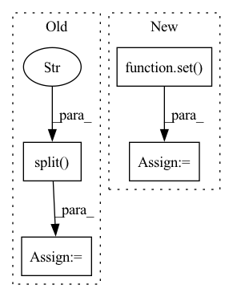

Pattern ID :8517
Before Change
private_key_path = os.path.expanduser(private_key_path)
public_key_path = get_public_key_path(private_key_path)
key_name = private_key_path.split("/" ) [-1]
// Generating ssh key if it does not exist
if private_key_path is None or not os.path.exists(private_key_path):After Change
ec2 = boto3.client("ec2", config["provider"]["region"])
key_pairs = ec2.describe_key_pairs()["KeyPairs"]
key_name = None
all_key_names = set()
def _get_fingerprint(public_key_path):
key = RSA.importKey(open(public_key_path).read())
In pattern: SUPERPATTERN
Frequency: 3
Non-data size: 4
Instances Fragment ID: 29481481
Project Name: skypilot-org/skypilot
Commit Name: cae97d0a2a94d72e071cb99dd8522b0e2cac212e
Time: 2021-12-20
Author: michael.luo123456789@gmail.com
File Name: prototype/sky/authentication.py
M Class Name: AnonimousClass
N Class Name: AnonimousClass
M Method Name: setup_aws_authentication(1)
N Method Name: setup_aws_authentication(1)
M Parent Class:
N Parent Class:
M File Name: prototype/sky/authentication.py
N File Name: prototype/sky/authentication.py
M Start Line: 68
M End Line: 94
N Start Line: 74
N End Line: 122
Before Change
args, kwargs = fake_create_mining_cache.call_args
// Construct the restricted model library data frame
selected_models = restrict_to_models.split("," )
df_model_library_selected = df_model_library[
df_model_library["model_id"].isin(selected_models).tolist()
]
After Change
args, kwargs = fake_create_mining_cache.call_args
// Construct the restricted etypes
available_models = set(restrict_to_etypes.split(",")) & set( entity_types)
// Check the args/kwargs
assert kwargs["database_engine"] == fake_sqlalchemy.create_engine()
assert isinstance(kwargs["ee_models_paths"], dict) Fragment ID: 29481483
Project Name: bluebrain/search
Commit Name: 05fe137611fffaab1cdfb9f3c04b32bb8964666d
Time: 2021-06-22
Author: 47669575+EmilieDel@users.noreply.github.com
File Name: tests/test_entrypoint/test_create_mining_cache.py
M Class Name: AnonimousClass
N Class Name: AnonimousClass
M Method Name: test_send_through(9)
N Method Name: test_send_through(7)
M Parent Class:
N Parent Class:
M File Name: tests/test_entrypoint/test_create_mining_cache.py
N File Name: tests/test_entrypoint/test_create_mining_cache.py
M Start Line: 88
M End Line: 163
N Start Line: 85
N End Line: 135
Before Change
if bio_label == ENTITY_OUTSIDE_SYMBOL:
yield bio_label, None, confidence_val
else:
bio_label, class_label = bio_label.split("-" )
yield bio_label, class_label, confidence_val
else:
break
else:After Change
self.id2label = id2label
def get_labels(self, word: TokenizedWord) -> Set[Tuple[str, Optional[str]]]:
bio_and_class_labels: Set[Tuple[str, Optional[str]]] = set()
token_confidences_sorted = torch.argsort(word.token_confidences, dim=1, descending=True)
for i, token_confidence_indices in enumerate(token_confidences_sorted):
for confidence_index in token_confidence_indices: Fragment ID: 29481484
Project Name: astrazeneca/kazu
Commit Name: 422eb2bceb9b3988a63113d66d19b1298220cec1
Time: 2022-11-30
Author: richard.jackson4@astrazeneca.com
File Name: kazu/steps/ner/tokenized_word_processor.py
M Class Name: SmartSpanFinder
N Class Name: SmartSpanFinder
M Method Name: get_labels(2)
N Method Name: get_labels(3)
M Parent Class: SpanFinder
N Parent Class: SpanFinder
M File Name: kazu/steps/ner/tokenized_word_processor.py
N File Name: kazu/steps/ner/tokenized_word_processor.py
M Start Line: 279
M End Line: 312
N Start Line: 246
N End Line: 272